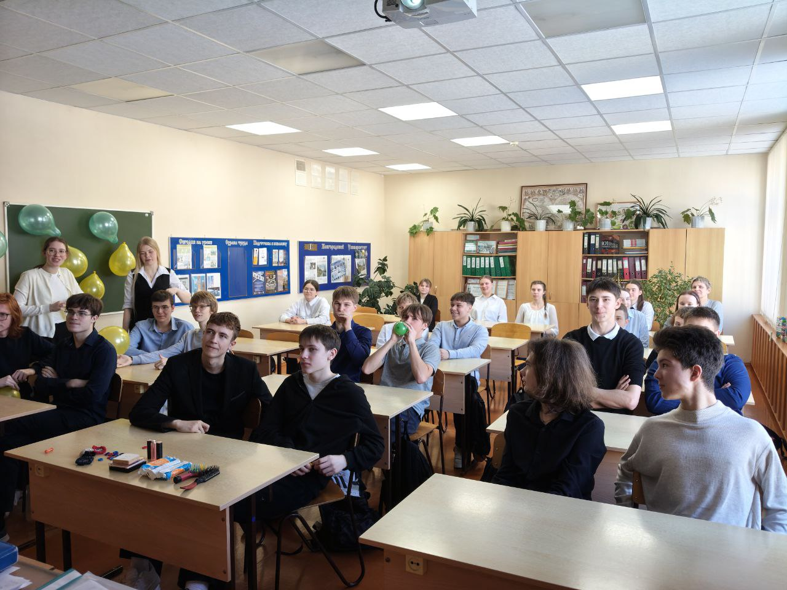
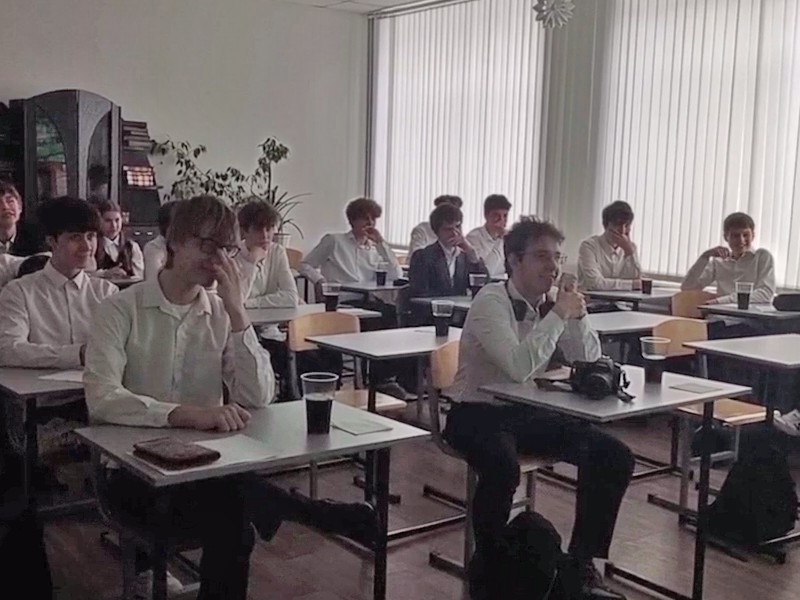

Поздравления на 23 февраля в 10 и 11 классах
В 10 и 11 классах мужские коллективы классов были поздравлены с Днём Защитника Отечества.
10Б (левая фотография): "Из-за большого количества классных мероприятий времени на подготовку поздравления у нас было не очень много. Мы с девочками решили, что хотим подарить как эмоции, так и что-то полезное. Мы нашли фотографии наших ребят и оформили плакат с цитатами, а также украсили класс в тематике праздника. Подобрали небольшие подарки, которые поднимут настроение и будут полезны нашим мальчикам. Вместе с учителем мы подготовили квест, который парни достаточно быстро смогли пройти, и в конце их ждали подарки. Также, чтобы была небольшая интрига, мы начали поздравления прямо во время урока. Решая довольно сложные геометрические задачи, мы перешли на задания из квеста, за решения которых мальчики также получали медальки. По окончании поздравления они нас поблагодарили и сказали, что им очень понравилось".
В 10 «А» классе поздравление было креативным. Девочки подготовили поздравительную презентацию для мальчиков с их детскими фотографиями! Также были вручены сладкие подарки. Ребятам понравилось столь интересное и необычное поздравление от их одноклассниц.


11А (правая фотография): Девушки из 11 "А" класса подготовили каждому однокласснику подарок, основанный на их личных предпочтениях. Какая сложная работа, не так ли? А творческая часть их поздравления заключалась в оригинальном, комедийном видео. Все остались в восторге накануне праздника!